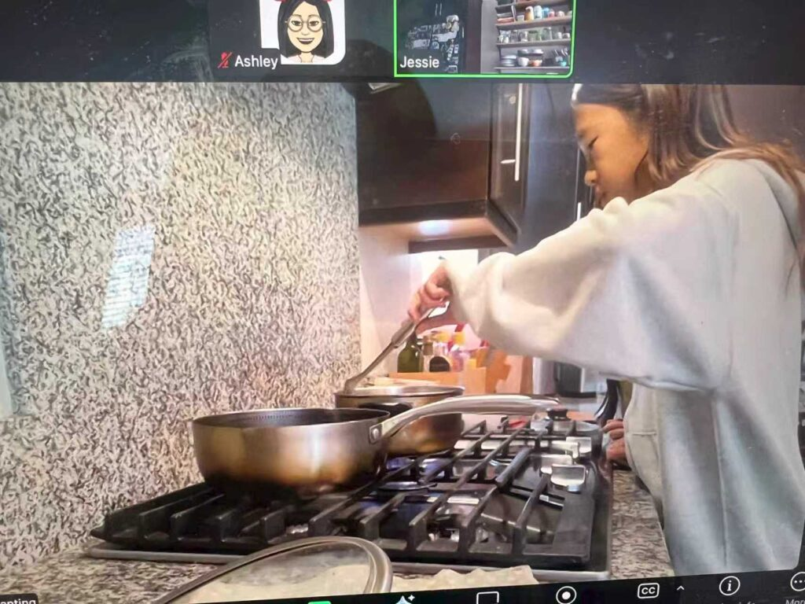
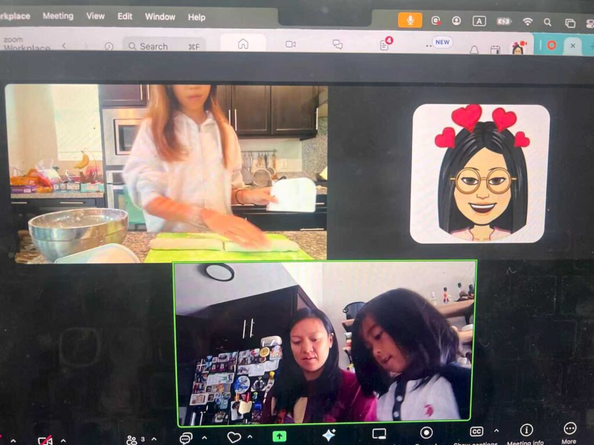
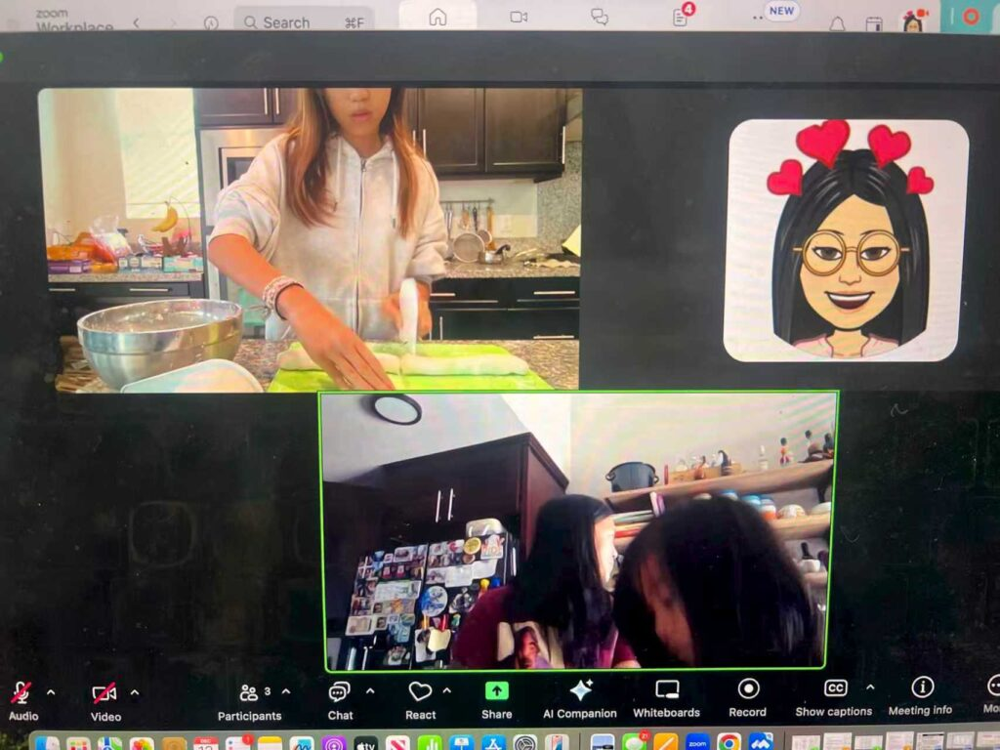

On December 13, 2025, as part of ESC Club’s ongoing Luna Culture Promotion Series for Mexico and Latina communities, ESC Club proudly hosted a special online cultural webinar titled “Rolling Tangyuan with Lola.” The virtual event brought Chinese Lunar traditions directly into Latino households through storytelling, food, and family participation.

The Zoom webinar was warmly led by Lola, who began the session with an engaging introduction to The Lantern Festival, one of the most meaningful celebrations at the end of the Lunar New Year season. Lola shared the history of the festival and explained how it is traditionally celebrated on the 15th day of the Lunar calendar, marking the first full moon of the new year.<https://docs.google.com/presentation/d/1SxYrILTYQUhzgkIrXHt658Ne69tUlnCH/edit?usp=sharing&ouid=103179986698522590749&rtpof=true&sd=true>


She then introduced Tangyuan, a traditional Chinese sweet made from glutinous rice flour. Lola explained the cultural significance behind the round shape of Tangyuan, which symbolizes family reunion, unity, and togetherness—values deeply shared across cultures. Participants learned how Tangyuan is closely connected to the Lantern Festival and why families gather to enjoy this dish together during the celebration.
Following the cultural story, Lola demonstrated step by step how to roll Tangyuan, fill them with sweet red bean paste, and cook them in a hot pot. Families watched closely as Lola prepared the rice balls, many experiencing this traditional Chinese food for the very first time.

Most participating families were Latino households who had never had direct access to Chinese traditional festival foods. Through the live demonstration and interactive format, families felt welcomed, curious, and excited to learn. Parents and children alike enjoyed watching, asking questions, and imagining making Tangyuan together at home.
This webinar created a joyful space for cross-cultural learning, showing how food and storytelling can connect families from different backgrounds. ESC Club is honored to continue building bridges between cultures and creating meaningful shared experiences for global communities through Luna cultural education.